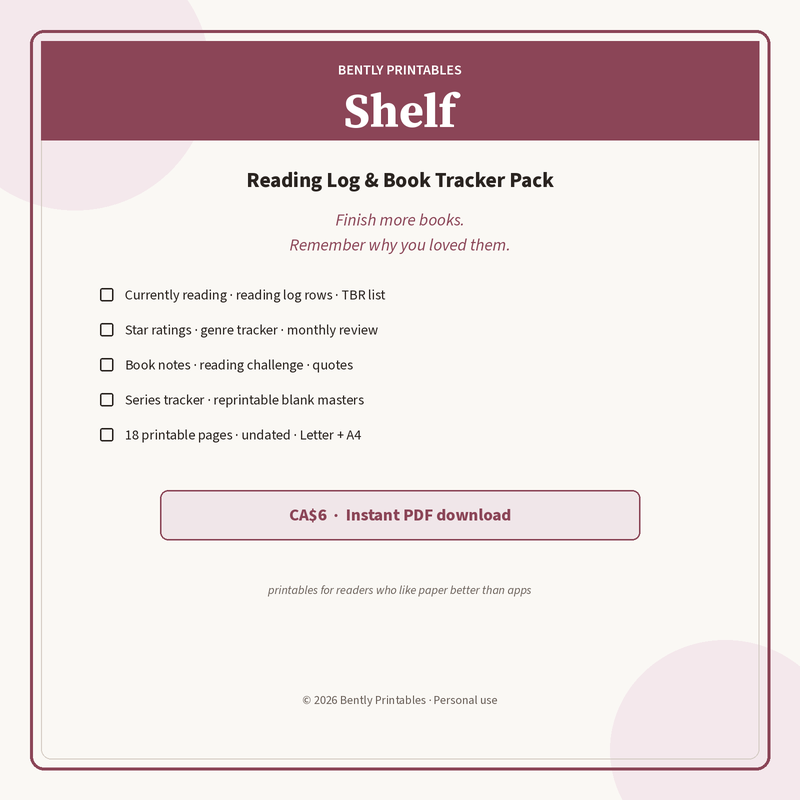

Free reading log
Finish more books. Remember why you loved them.

One printable page: twelve reading-log rows with dates, stars, genre, and a one-word why. Nightstand-ready.
Download free PDF
What’s on the free page
Want the whole Shelf system? Shelf: Reading Log & Book Tracker Pack — CA$6: 18 pages — currently reading, TBR, stars, genres, monthly review, book notes, challenge, quotes, series tracker, blank masters. Letter + A4. Get it on Gumroad →
- 16 reading-log rows (title, dates, stars, genre, why)
- Undated — start any time of year
- Print on US Letter · Actual size or Fit to page
What’s in the full pack
- Currently reading dashboard (up to 3 open books)
- 2 reading-log sheets + TBR with H/M/L priority
- Star-rating guide · year favourites · genre tally
- Monthly keep/tweak/drop review
- Book-notes blanks · reading challenge (12/24/36/52)
- Quotes catcher · series & author tracker
- Blank masters to reprint forever
- US Letter and A4 PDFs · personal household use
Print tips
Regular paper is fine. Keep the current log on a clipboard or in a binder sleeve. Photograph a filled page if you want a digital backup without another app.